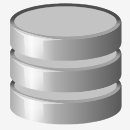

ABAPmatic

Burada ABAP programlama dilinin temel yapıları ile ilgili bilgiler göreceksiniz.
Textarea geldiğinde aklında kalanı yazmaya çalışırsan daha iyi öğreneceksin.
Rastgele bilgi için butona basabilirsiniz.